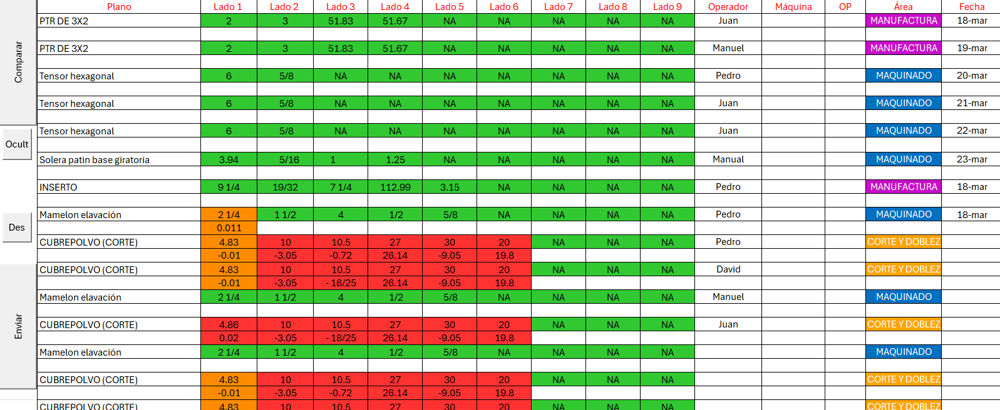
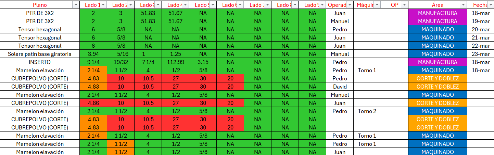
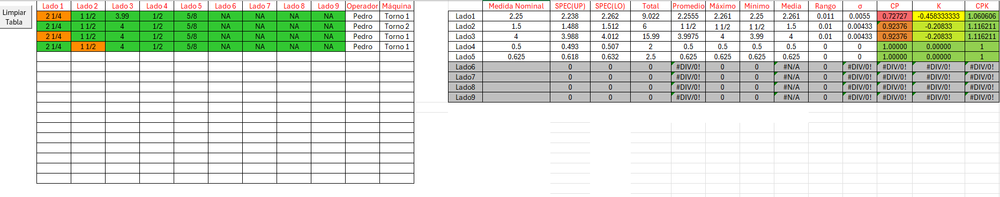
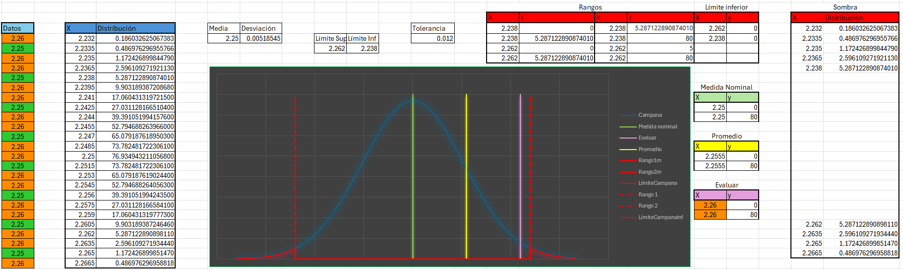

Project Overview
This tool was developed in Microsoft Excel using VBA macros to automate and streamline the quality inspection process in a manufacturing environment.
Key Features
- Data Entry: Capture measurements for up to 9 sides per part, including operator, machine, production order, and date. Automatic validation against specifications with color-coded results (green: OK, yellow: within tolerance, red: out of range).
- Data Analysis: Consolidated data table with filtering options and statistical calculations such as mean, range, standard deviation, Cp, and Cpk.
- Visualization: Gaussian distribution chart (bell curve) for visual analysis of measurement dispersion.
- Specification Management: Department-specific sheets with validation rules applied automatically during data entry.
This system was successfully implemented in a real production environment, improving quality monitoring and enabling data-driven decision-making.
Gallery



